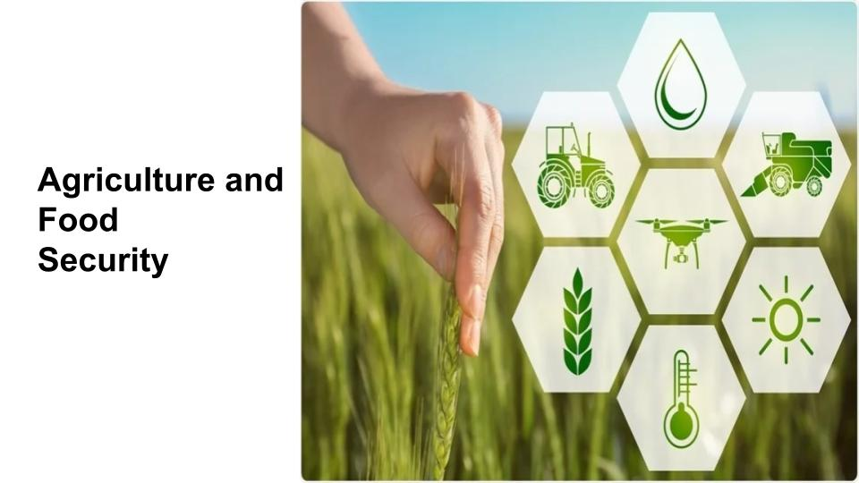
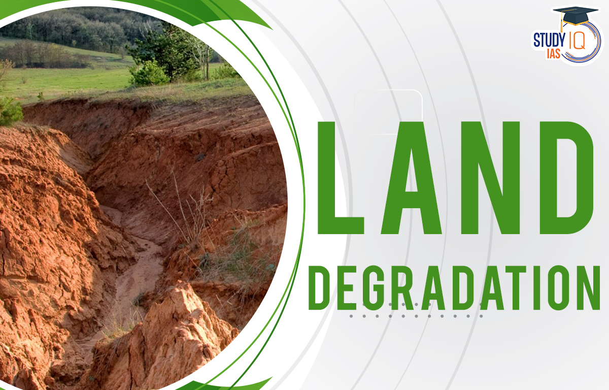
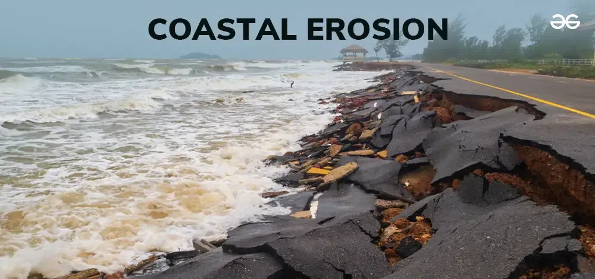
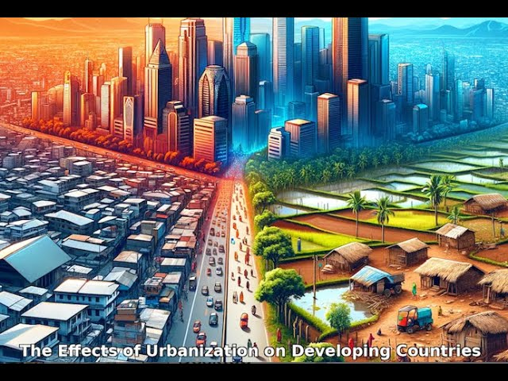
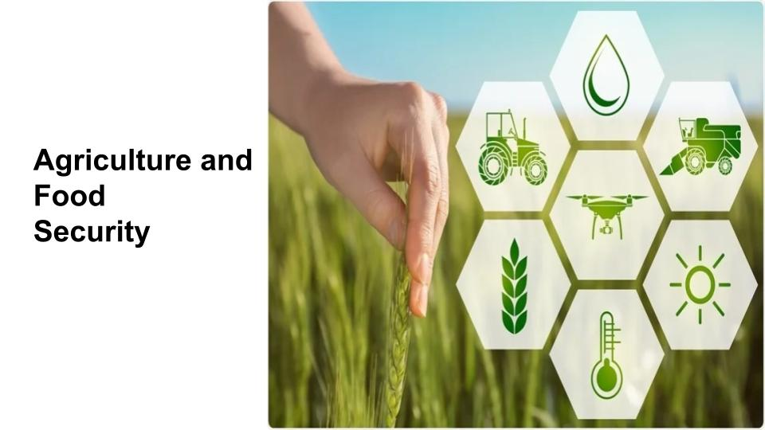
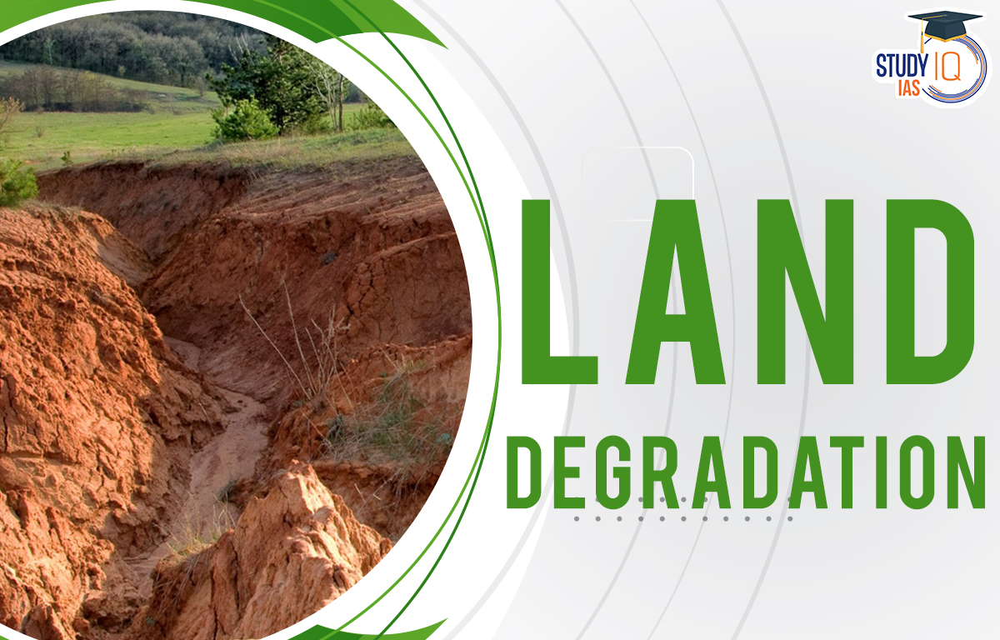
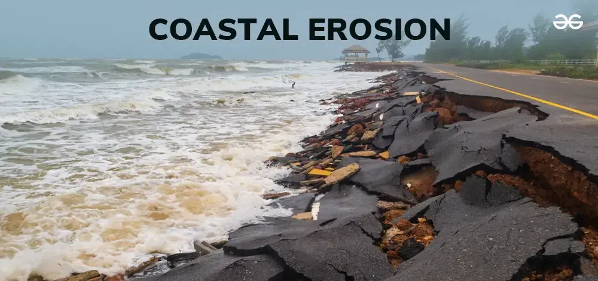
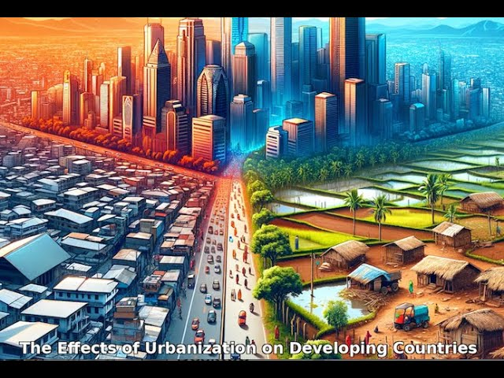
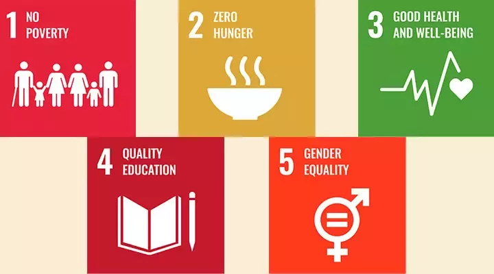

Digital Earth Africa makes Earth observation (EO) data accessible, delivering decision-ready products to the African continent. With free and rapid access to the data they need, policy makers, scientists, the private sector and civil society can begin to address environmental and economic challenges. Decisions are guided and informed effectively to support sustainable development. Data generated by Digital Earth Africa will provide invaluable insights for better decision making across key themes including
 
We Support Sustainable Development
UN Sustainable Development Goals
Union’s Agenda 2063 Framework
Goal 1️⃣:A high standard of living, quality of life, and wellbeing for all citizens.
Goal 5️⃣: Modern agriculture for increased productivity and production.
Goal 6️⃣: Blue/ocean economy for accelerated economic growth.
Goal 7️⃣: Environmentally sustainable and cclimate resilient economies and communities.

Countries are empowered, with Earth
observation data about land, water resources, and human settlements enabling them to make evidence-based policy decisions.
Lives are improved, through access to information
that empowers governments,individuals and communities to make informed choices.
Developmental activities are more effective,
through access to information that provides insights to better understand the root cause of issues and develop important solutions. Continental assessments, reporting, and responses are advanced through access to continental-scale data, decision ready products, and analysis ready services.
Digital transformation is advanced through
industry uptake and innovation using products and services from Digital Earth Africa.
Increased economic development and job creation.
through access to data for commercial products and services development.
Over $2bn of benefits to the African continent
possible through accelerated industry growth, improvements in agricultural productivity and the detection and prevention of unregulated mining.
We are built on partnerships to create sustained capability development in Africa
Digital Earth Africa will be an operational and sustainable capability on the continent of Africa, with African governance and majority expertise in data analysis, use and management.Digital Earth Africa is working with the African and global EO community to ensure the platform continues to deliver data as analysis ready, value addable and readily accessible to meet the needs of our users.